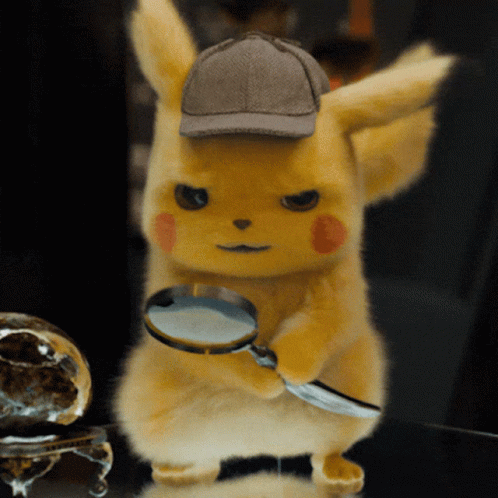

Investigando
Certo, você preferiu descobrir o que estava acontecendo. Boatos dizem que um Gyarados foi solto por engano e está destruindo todo o sistema principal da Nintendo. Você terá que agir rápido, e agora, o que fazer?
Pressione:
1 - Um Gyarados?? Temos vantagem, vamos enfrenta-lo!
2 - Essa história parece estar errada, vamos checar com mais calma